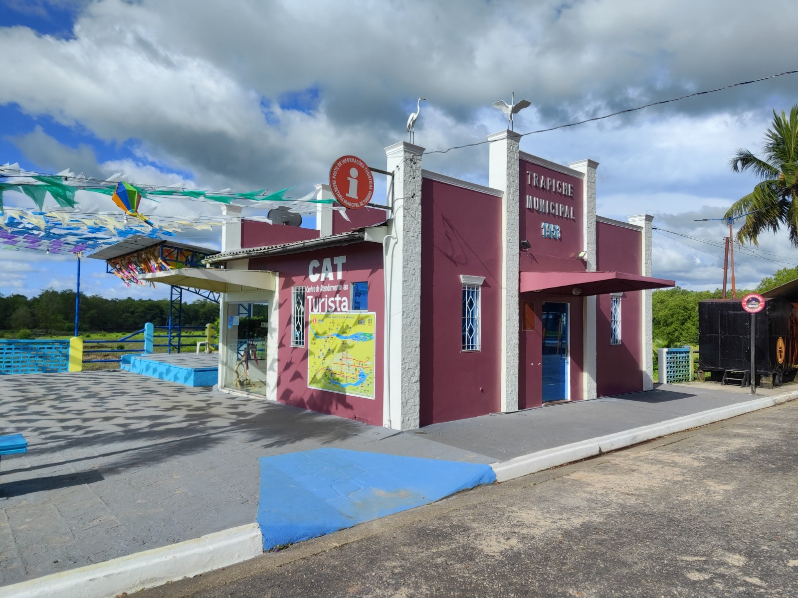

A sua porta de entrada para as belezas naturais de Curuçá
INICIAR
Localizado estrategicamente para receber visitantes, o nosso terminal oferece suporte completo para quem deseja explorar os rios, manguezais e a cultura local.
Horário de Funcionamento: Segunda a Sábado, das 08h às 18h.